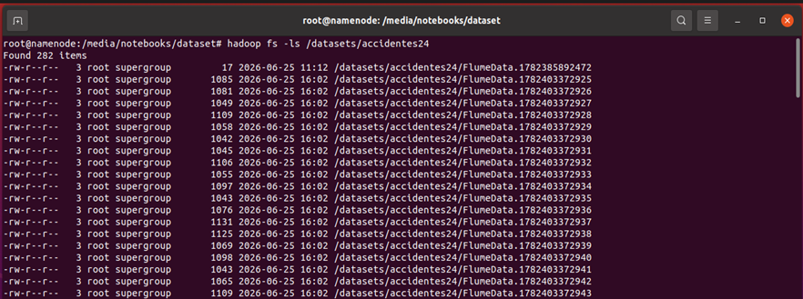

Capítulo 5 - Soporte Teórico y Validación Práctica del Proyecto
Lección 4.Preparación del entorno para la ingesta de datos con Apache Flume.
Lección 4.Preparación del entorno para la ingesta de datos con Apache Flume.
Una vez configurado el agente Apache Flume, el siguiente paso consiste en verificar que la ingesta de datos se realiza correctamente y que la información queda almacenada en el sistema de archivos distribuido HDFS.
Durante este ejercicio se analizará el fichero de configuración flume_accidentes.conf, identificando el funcionamiento de cada uno de los componentes que intervienen en el proceso de transferencia de datos hacia el clúster Hadoop.
El primer paso consiste en declarar el agente Apache Flume y especificar los componentes que participarán en el flujo de datos.
agent.sources = src1
agent.channels = ch1
agent.sinks = sink1
Esta configuración indica que el agente está formado por una Source, un Channel y un Sink, elementos que actuarán conjuntamente durante todo el proceso de ingesta.
La Source representa el punto de entrada de los datos dentro de Apache Flume. En esta práctica se utiliza el componente spooldir, encargado de supervisar continuamente un directorio del sistema de archivos local.
agent.sources.src1.type = spooldir
agent.sources.src1.spoolDir = /home/hadoop/flume_input
agent.sources.src1.fileHeader = true
Cada vez que un nuevo fichero es copiado al directorio /home/hadoop/flume_input, Flume lo detecta automáticamente, genera los eventos correspondientes y los envía al Channel configurado.
El Channel constituye el almacenamiento temporal entre la Source y el Sink, garantizando la transferencia segura de los eventos.
agent.channels.ch1.type = memory
agent.channels.ch1.capacity = 1000
agent.channels.ch1.transactionCapacity = 100
En este proyecto se utiliza un canal en memoria, adecuado para entornos docentes por su elevado rendimiento durante la ingesta.
El Sink constituye el destino final del flujo de datos, almacenando automáticamente la información en HDFS.
agent.sinks.sink1.type = hdfs
agent.sinks.sink1.hdfs.path = hdfs://namenode:9000/datasets/accidentes24/
agent.sinks.sink1.hdfs.fileType = DataStream
agent.sinks.sink1.hdfs.writeFormat = Text
agent.sinks.sink1.hdfs.batchSize = 50
Los datos se almacenan directamente dentro de HDFS en formato texto, agrupando los eventos en bloques de escritura para mejorar el rendimiento del proceso.
Durante la ingesta, Apache Flume genera automáticamente múltiples ficheros de salida dentro del directorio configurado en HDFS. Este mecanismo mejora la escalabilidad del sistema y permite que los datos sean procesados posteriormente mediante Hadoop Streaming, MapReduce o Apache Hive sin necesidad de realizar operaciones adicionales.

Figura. Archivos generados automáticamente por Apache Flume en HDFS.
El funcionamiento completo del agente Apache Flume puede resumirse en las siguientes etapas:
/home/hadoop/flume_input.
Una vez finalizada la ingesta, puede comprobarse que los archivos han sido almacenados correctamente en HDFS mediante los comandos de Hadoop.
hdfs dfs -ls /datasets/accidentes24
hdfs dfs -cat /datasets/accidentes24/FlumeData.*
Apache Flume proporciona un mecanismo de ingesta completamente automatizado que facilita la incorporación de información al sistema HDFS. Gracias a la coordinación entre la Source, el Channel y el Sink, los datos son transferidos de forma eficiente y quedan preparados para su posterior procesamiento mediante Hadoop Streaming, MapReduce y el resto de tecnologías del ecosistema Hadoop.